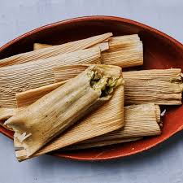

Tamales Verdes
Description:Tamales are a festive favorite made from corn dough (masa) wrapped around a filling.
This green version is filled with shredded chicken in tomatillo salsa.
Ingredients
- Masa harina
- Chicken broth
- Baking powder
- Salt
- Lard or shortening
- Shredded chicken
- Tomatillos
- Green chiles
- Garlic
- Onion
- Corn husks (soaked)
Steps:
- Blend tomatillos, chiles, garlic, and onion to make salsa.
- Mix salsa with shredded chicken.
- Mix masa with broth, lard, and seasoning until fluffy.
- Spread masa on soaked corn husks, add chicken filling, and fold.
- Steam tamales for 1–1.5 hours until firm.
Home